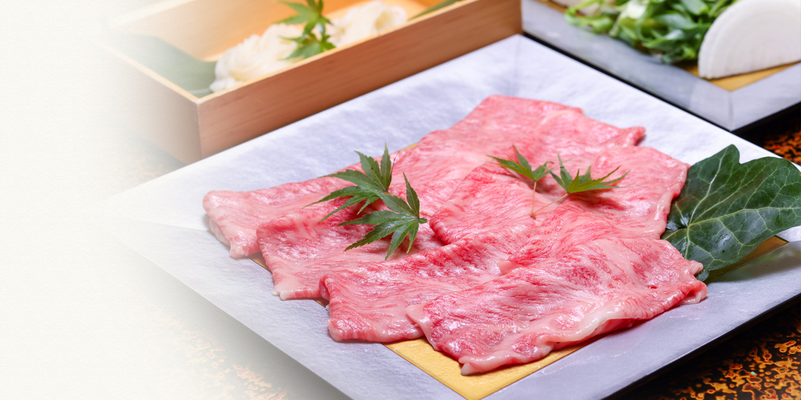
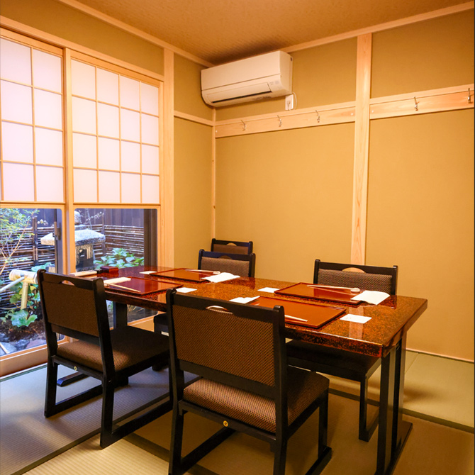

English
It has been prepered spesialty foods of kyoto.
Hanasaki Miyagawacho is located in Miyagawacho,
one of Kyoto's five hanamachi (geisha districts).
With Yasaka Shrine to the north, Kenninji Temple to the east,
and the Kamo River to the west —
a quiet, charming streetscape of stone-paved lanes.
We offer Tofu, Namafu (wheat gluten), Yuba (tofu skin),
Kyoyasai (traditional Kyoto vegetables), Hamo (pike conger) and Kani (crab).
These are beloved seasonal specialties of Kyoto.
Please enjoy the flavors of each season in our private rooms,
and experience the refined art of Kyoto cuisine.
Lunch service is also available.
Perfect for sightseeing, business entertaining,
and life's special milestones.



Hot Pot Menu
Kaiseki - set of dishes,
serverd on an individual tray.
Private Room
Private Room
Private rooms are available for lunch courses at 6,600yen or above, and dinner courses at 11,000yen or above.
(Tax included. 10% service charge applies separately.)
Ideal for business entertaining, anniversaries, and special celebrations.
We can also assist with seating arrangements and gift preparation.
As private rooms fill up quickly, early reservations are recommended.



Restaurant
Information
- Name
- Gion Kyo-ryori Hanasaki Miyagawacho / 祇園京料理 花咲 宮川町店
Japanese cuisine / Kyoto cuisine / Kaiseki
- Phone
- 075-606-5970 (domestic)
+81-75-606-5970 (international)
- Address
- 3-290-2, Miyagawasuji, Higashiyama-ku, Kyoto-shi, Kyoto, 605-0801
〒605-0801 京都府京都市東山区宮川筋3-290-2
- Access
- Keihan Main Line "Gion-Shijo Station" Exit 1, 3-minute walk / 200m
Hankyu Kyoto Line "Kawaramachi Station" Exit 1B, 7-minute walk / 450m
JR / Kintetsu Line "Kyoto Station" 15-minutes by car / 2.8km
- Open
- Monday - Sunday Lunch 11:30～14:00（LO）
Monday - Sunday Dinner 17:30～22:00（LO20:00）
No fixed holiday
- Seats
- Total number of seats 44 seats (maximum of 20 banquets)
Private rooms available
- Parking
- There is no affiliated parking lot so please use nearby coin parking.
- Parking Palac Komatsucho No.1（13 cars・24 hours / 2-minute walk from Hanasaki Miyagawacho・170m）
- Parking Palac Miyagawasuji No.1（9 cars・24 hours / 1-minute walk from Hanasaki Miyagawacho・110m）
- Cards accepted
- VISA, MASTER, DC, UFJ, AmericanExpress, JCB, NICOS, APLUS, SAISON
- Service charge
- 10% (a fee added to the bill)
Access map
Landmark
- A Kennin-ji Temple
- B Kyoto Ebisu Shrine
- C Donguri Bridge
- D Shijo Bridge
- E Kamo River
- F Minamiza Theatre
- G Gion Hanamikoji Street
- H Gion Corner
Landmark
- G Gion Hanamikoji Street
- H Gion Corner
Train / Bus
- 1 Shijo Keihan Bus Stop
- 1 Keihan Gion-Shijo Station Exit 1
- 2 Hankyu Kawaramachi Station Exit 1B
Parking
- P1 Paraca Miyagawa-suji No.1
- P2 Paraca Komatsu-cho No.1